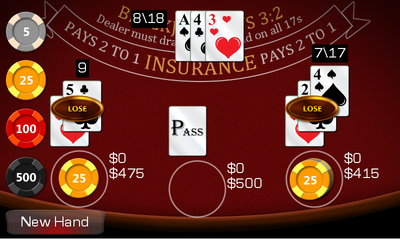

Cards Starter Kit
Ported from Microsoft's XNA 4.0 Cards Starter Kit for Windows, a Blackjack game built on the reusable Cards Framework.
Source for this sample on GitHub ↗

Play ▸Opens in a new tab.
About this sample
Play a complete game of Blackjack against the dealer. The sample uses a reusable card-game and animation framework for cards, hands, players, rules and screen transitions.
Controls
| Action | Control |
|---|---|
| Start | Press Enter on Play |
| Bet and play | Click chips, then Deal; choose Hit or Stand during a hand |
| Pause | Escape; choose Resume or Quit Game |
| Card backs | Open Theme from the main menu and choose Red or Blue |